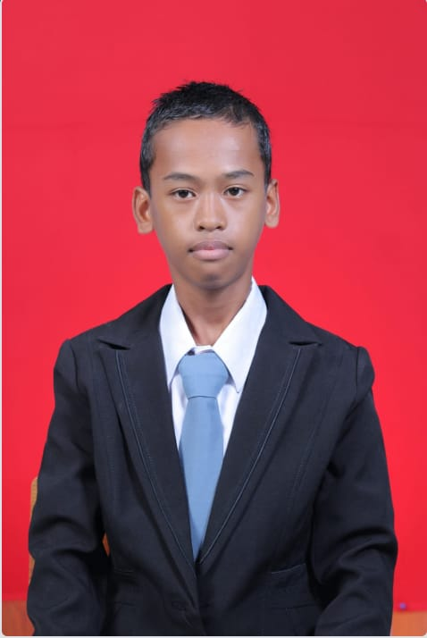

Home

BIODATA
Nama:
Muhammad Jalil
Tempat tanggal lahir:
Tanah Grogot,22 Agustus 2004
Agama :
Islam
Alamat :
Sungai Tuak, 11 Oktober 2003
Keahlian :
Rekayasa Perangkat lunak
Riwayat Pendidikan :
SDN 015 Sungai Tuak, MTSN 01 Tanah Grogot